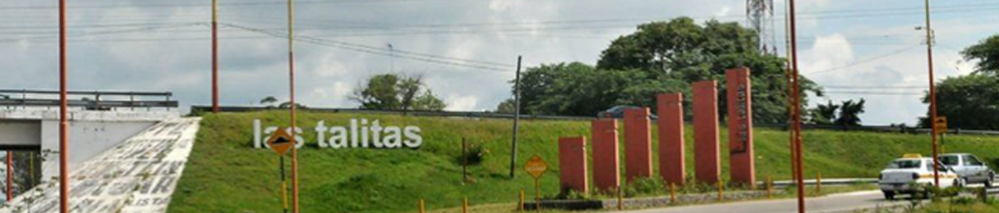

Información, datos y noticias sobre la ciudad de Las Talitas

Noticias
Un nuevo centro de cinotecnia en Las Talitas
Se trata del tercer centro de adiestramiento para perros de las fuerzas provinciales y
nacionales,
pero el primero fuera de capital federal. Esto no es importante solo para Las Talitas, sino para
toda la
región,
así declaraba Marta Najar, intendenta de nuestra ciudad. La misma fue acompañada en la mañana de
ayer
por el Gobernador de la Provincia, el CPN Osvaldo Jaldo quien presidió el acto frente a una fuerte y
expandida cúpula del poder ejecutivo.
El nuevo centro tiene como objetivo entrenar canes especializados en detección de sustancias
ilícitas,
búsqueda de personas desaparecidas y localización de restos humanos.
continuar leyendo...